Like with linear functions, the graph of an exponential function is determined by the values for the parameters in the function’s formula.
To get a sense for the behavior of exponential functions, let us begin by looking more closely at the function \(f(x)=2^{x}\text{.}\) Listing a table of values for this function:
\(x\)
\(f(x)\)
\(-3\)
\(\dfrac{1}{8}\)
\(-2\)
\(\dfrac{1}{4}\)
\(-1\)
\(\dfrac{1}{2}\)
\(0\)
\(1\)
\(1\)
\(2\)
\(2\)
\(4\)
\(3\)
\(8\)
Notice that:
List4.2.1.
This function is positive for all values of \(x\text{.}\)
As \(x\) increases, the function grows faster and faster (the rate of change increases).
As \(x\) decreases, the function values grow smaller, approaching zero. This is an example of exponential growth.
Looking at the function \(g(x)=(1/2)^{x}\text{:}\)
\(x\)
\(g(x)\)
\(-3\)
\(8\)
\(-2\)
\(4\)
\(-1\)
\(2\)
\(0\)
\(1\)
\(1\)
\(\dfrac{1}{2}\)
\(2\)
\(\dfrac{1}{4}\)
\(3\)
\(\dfrac{1}{8}\)
Note this function is also positive for all values of \(x\text{,}\) but in this case grows as \(x\) decreases, and decreases towards zero as \(x\) increases. This is an example of exponential decay. You may notice from the table that this function appears to be the horizontal reflection of the \(f(x)=2^{x}\) table. This is in fact the case: \(f(-x)=2^{-x}=(2^{-1})^{x}=(\dfrac{1}{2})^{x}=g(x)\text{.}\)
Looking at the graphs also confirms this relationship.
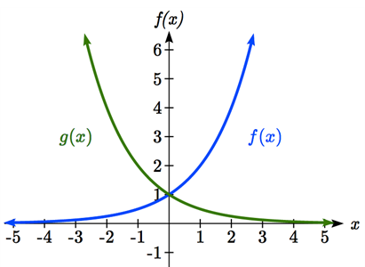
Consider a function of the form \(f(x)=ab^{x}\text{.}\) Since \(a\text{,}\) which we called the initial value in the last section, is the function value at an input of zero, \(a\) will give us the vertical intercept of the graph.
From the graphs above, we can see that an exponential graph will have a horizontal asymptote on one side of the graph, and can either increase or decrease, depending upon the growth factor. This horizontal asymptote will also help us determine the long run behavior and is easy to determine from the graph.
The graph will grow when the growth rate is positive, which will make the growth factor \(b\) larger than one. When it’s negative, the growth factor will be less than one.
Definition4.2.2.Graphical Features of Exponential Functions.
Graphically, in the function \(f(x)=ab^{x}\text{,}\)
\(a\) is the vertical intercept of the graph
\(b\) determines the rate at which the graph grows. When \(a\) is positive,
the function will increase if \(b > 1\)
the function will decrease if \(0 < b < 1\)
The graph will have a horizontal asymptote at \(y = 0\)
The domain of the function is all real numbers
The range of the function is \((0,\infty)\)
When sketching the graph of an exponential function, it can be helpful to remember that the graph will pass through the points \((0, a)\) and \((1, ab)\text{.}\)
The value \(b\) will determine the function’s long run behavior: If \(b > 1\text{,}\) as \(x\to \infty, f(x)\to \infty\) and as \(x\to-\infty, f(x)\to0\text{.}\) If \(0 < b < 1\text{,}\) as \(x\to\infty,f(x)\to0\) and as \(x\to-\infty, f(x)\to \infty\text{.}\)
Example4.2.3.
Sketch a graph of \(f(x)=4(\dfrac{1}{3})^{x}\)
Solution.
This graph will have a vertical intercept at \((0,4)\text{,}\) and pass through the point \((1,\dfrac{4}{3})\text{.}\) Since \(b < 1\text{,}\) the graph will be decreasing towards zero.
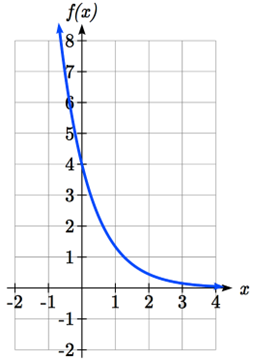
We can also see from the graph the long run behavior: as \(x\to\infty, f(x)\to0\) and as \(x\to-\infty, f(x)\to \infty\text{.}\)
To get a better feeling for the effect of \(a\) and \(b\) on the graph, examine the sets of graphs below. The first set shows various graphs, where \(a\) remains the same and we only change the value for \(b\text{.}\)
Notice that the closer the value of \(b\) is to 1, the less steep the graph will be.
In the next set of graphs, \(a\) is altered and our value for \(b\) remains the same.
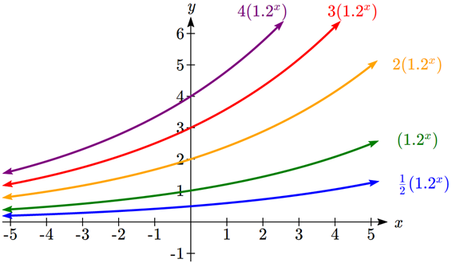
Notice that changing the value for \(a\) changes the vertical intercept. Since \(a\) is multiplying the \(b^{x}\) term, \(a\) acts as a vertical stretch factor, not as a shift. Notice also that the long run behavior for all of these functions is the same because the growth factor did not change and none of these \(a\) values introduced a vertical flip.
Example4.2.4.
Match each equation with its graph.
\begin{equation*}
f(x)=2(1.3)^{x}
\end{equation*}
\begin{equation*}
g(x)=2(1.8)^{x}
\end{equation*}
\begin{equation*}
h(x)=4(1.3)^{x}
\end{equation*}
\begin{equation*}
k(x)=4(0.7)^{x}
\end{equation*}
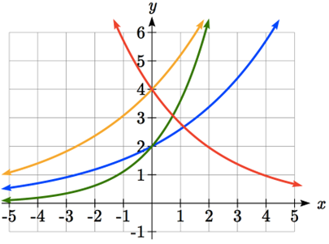
Solution.
The graph of \(k(x)\) is the easiest to identify, since it is the only equation with a growth factor less than one, which will produce a decreasing graph. The graph of \(h(x)\) can be identified as the only growing exponential function with a vertical intercept at \((0,4)\text{.}\) The graphs of \(f(x)\) and \(g(x)\) both have a vertical intercept at \((0,2)\text{,}\) but since \(g(x)\) has a larger growth factor, we can identify it as the graph increasing faster.
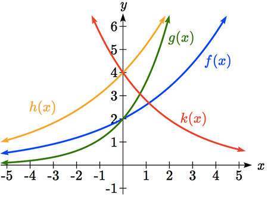
Checkpoint4.2.5.
Graph the following functions on the same axis:
\begin{equation*}
f(x)=(2)^{x}
\end{equation*}
\begin{equation*}
g(x)=2(2)^{x}
\end{equation*}
\begin{equation*}
h(x)=2(1/2)^{x}
\end{equation*}
Subsection4.2.2Transformations of Exponential Graphs
While exponential functions can be transformed following the same rules as any function, there are a few interesting features of transformations that can be identified. The first was seen at the beginning of the section - that a horizontal reflection is equivalent to a change in the growth factor. Likewise, since \(a\) is itself a stretch factor, a vertical stretch of an exponential function corresponds with a change in the initial value of the function.
Next consider the effect of a horizontal shift on an exponential function. Shifting the function \(f(x)=3(2)^{x}\) four units to the left would give \(f(x+4)=3(2)^{x+4}\text{.}\) Employing exponent rules, we could rewrite this:
Interestingly, it turns out that a horizontal shift of an exponential function corresponds with a change in initial value of the function.
Lastly, consider the effect of a vertical shift on an exponential function. Shifting \(f(x)=3(2)^{x}\) down 4 units would give the equation \(f(x)=3(2)^{x}-4\text{.}\)
Graphing that, notice it is substantially different than the basic exponential graph. Unlike a basic exponential, this graph does not have a horizontal asymptote at \(y = 0\text{;}\) due to the vertical shift, the horizontal asymptote has also shifted to \(y = -4\text{.}\) We can see that as \(x\to\infty, f(x)\to\infty\) and as \(x\to-\infty, f(x)\to-4\text{.}\)
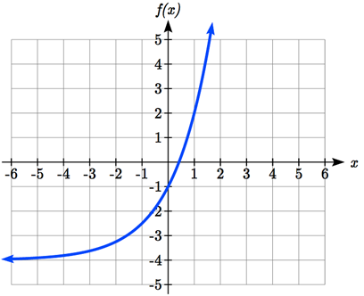
We have determined that a vertical shift is the only transformation of an exponential function that changes the graph in a way that cannot be achieved by altering the parameters \(a\) and \(b\) in the basic exponential function \(f(x)=ab^{x}\text{.}\)
Definition4.2.6.Transformations of Exponential Functions.
Any transformed exponential can be written in the form
\begin{equation*}
f(x)=ab^{x}+c
\end{equation*}
where \(y = c\) is the horizontal asymptote.
Note that, due to the shift, the vertical intercept is shifted to \((0, a+c)\text{.}\)
Checkpoint4.2.7.
Write the equation and graph the exponential function described as follows: \(f(x)=e^{x}\) is vertically stretched by a factor of 2, flipped across the \(y\)-axis and shifted up 4 units.
Example4.2.8.
Sketch a graph of \(f(x)=-3(\dfrac{1}{2})^{x}+4\text{.}\)
Solution.
Notice that in this exponential function, the negative in the stretch factor -3 will cause a vertical reflection, and the vertical shift up 4 will move the horizontal asymptote to \(y = 4\text{.}\) Sketching this as a transformation of \(g(x)=(1/2)^{x}\text{,}\) we get the following graphs:
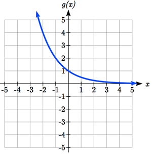
Figure4.2.9.The starting function \(g(x)=(\dfrac{1}{2})^{x}\)
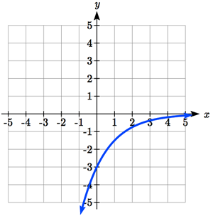
Figure4.2.10.Vertically reflected and stretched by 3: \(-3(\dfrac{1}{2})^{x}\)
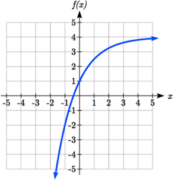
Figure4.2.11.Vertically shifted up four units: \(f(x)=-3(\dfrac{1}{2})^{x}+4\)
Notice that while the domain of this function is unchanged, due to the reflection and shift, the range of this function is \((-\infty,4)\text{.}\) So, as \(x\to\infty, f(x)\to4\) and as \(x\to-\infty, f(x)\to-\infty\text{.}\)
Functions leading to graphs like the one above are common as models for learning and models of growth approaching a limit.
Example4.2.12.
Find an equation for the function graphed here.
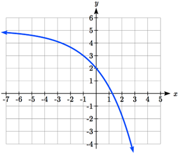
Solution.
Looking at this graph, it appears to have a horizontal asymptote at \(y = 5\text{,}\) suggesting an equation of the form \(f(x)=ab^{x}+5\text{.}\) To find values for \(a\) and \(b\text{,}\) we can identify two other points on the graph. It appears the graph passes through \((0,2)\) and \((-1,3)\text{,}\) so we can use those points. Substituting in \((0,2)\) allows us to solve for \(a\text{.}\)
\begin{equation*}
2=ab^{0}+5
\end{equation*}
\begin{equation*}
2=a+5
\end{equation*}
\begin{equation*}
a=-3
\end{equation*}
Substituting in \((-1,3)\) allows us to solve for \(b\text{.}\)
The final formula for our function is \(f(x)=-3(1.5)^{x}+5\text{.}\)
Checkpoint4.2.13.
Given the graph of the transformed exponential function, find a formula and describe the long run behavior.
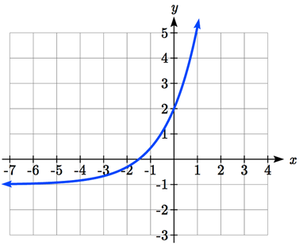
Subsection4.2.3Answers
Checkpoint4.2.14.
Answers to Checkpoing Exercises
Answer.
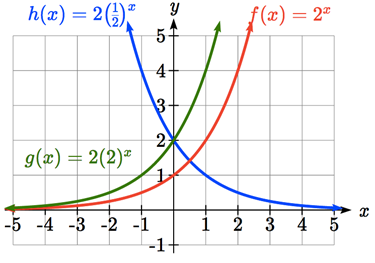
\(f(x)=2e^{-x}+4\)
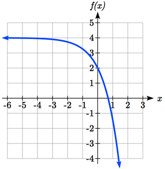
Horizontal asymptote at \(y = -1\text{,}\) so \(f(x)=ab^{x}-1\text{.}\) Substitute \((0,2)\) to find \(a = 3\text{.}\) Substitute \((1,5)\) to find \(5=3b^{1}-1\text{,}\)\(b = 2\text{.}\)\(f(x)=3(2)^{x}-1\text{.}\) As \(x\to\infty, f(x)\to\infty\) and as \(x\to-\infty, f(x)\to-1\text{.}\)
![A graph showing six exponential graphs on the same axes. All pass through the y-axis at 1. Three graphs are decreasing: nine-tenths to the x is the flattest. one-half to the x starts out steeper. one-third to the x starts out the steepest of the three but also levels off towards the x-axis on the right most quickly. Three graphs are increasing: three-halves to the x is the flattest, followed by 2 to the x. 3 to the x stays flattest on the left for the longest, but then becomes steepest fastest when x becomes positive.](external/C4S2Image3.png)